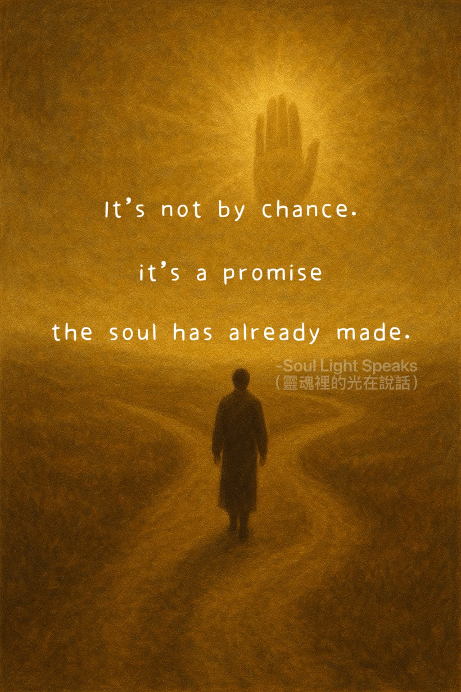

It is a promise the soul has already made.
People often say,
“Those who are meant to be guided will find their way.”
What we call “fate”
is not coincidence.
It is a quiet imprint—
a promise the soul has already made.
Some souls made vows long ago and are meant to walk
a path of practice in this life.
Others turn to spiritual teachings through suffering,
yet must return
to the tests of the human world
to complete what is theirs.
Not everyone is meant to walk a path of devotion.
It requires a calling—
something deeper than choice.
Practice is not limited to temples or churches .
Life itself
is the place of practice.
True guidance
does not take you out of life.
It leads you back
to the path that is yours—
with clarity
and with wisdom.
Because every soul
must, in the end,
complete its answers
in this world.